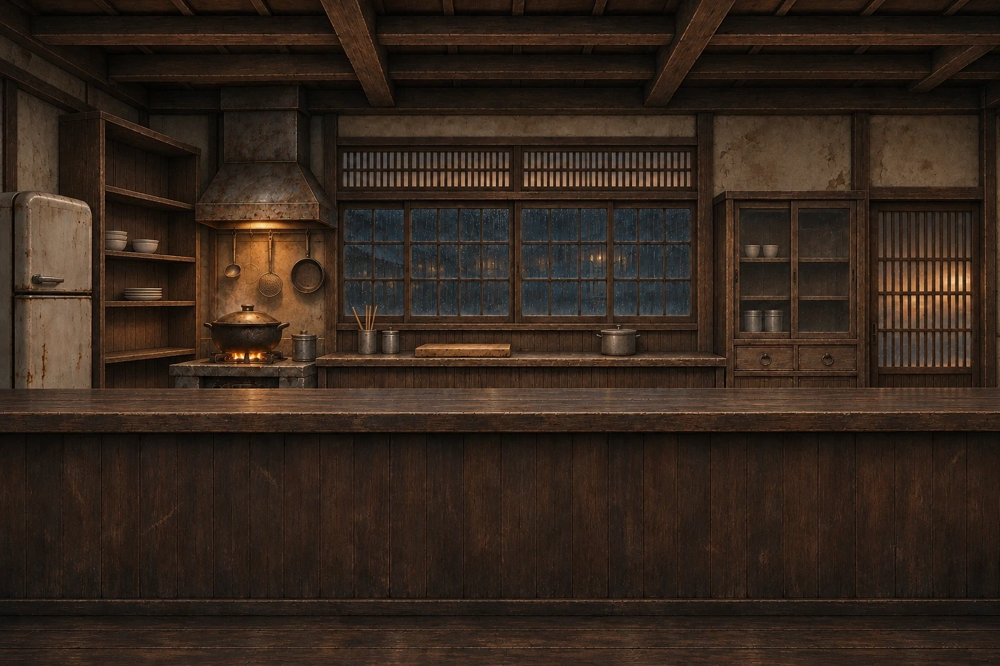
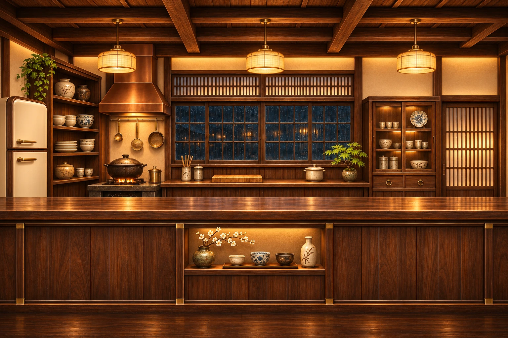
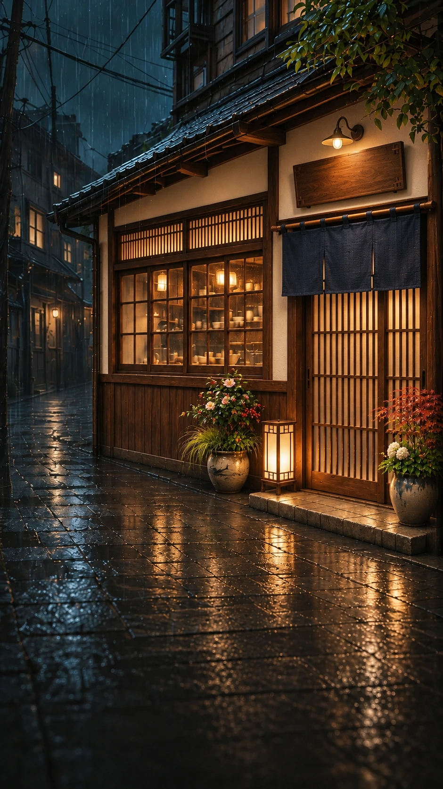
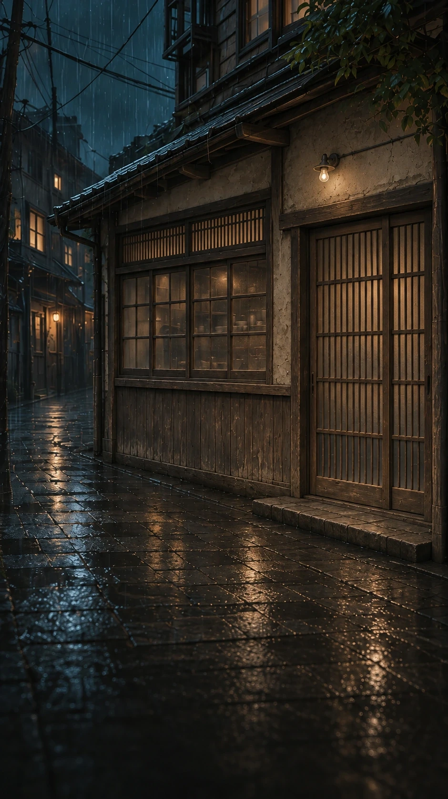

내부 개선
아이템을 쌓는 대신, 가게의 안팎을 한 단계씩.


슬라이더로 0~50단계를 모두 확인할 수 있습니다. 이미지를 누르면 원본 크기로 열립니다.


개선은 내부·외부 각각 순서대로 진행합니다. 보유 레벨과 캐쉬가 모두 충족되어야 하며, 완료한 개선에 다시 차감하지 않습니다.
게임 캐쉬 기준의 제안 가격입니다. 각 레벨에서 내부와 외부 중 원하는 쪽부터 진행합니다.
| 필요 레벨 | 내부 개선 | 캐쉬 / 보상 | 외부 개선 | 캐쉬 / 보상 |
|---|